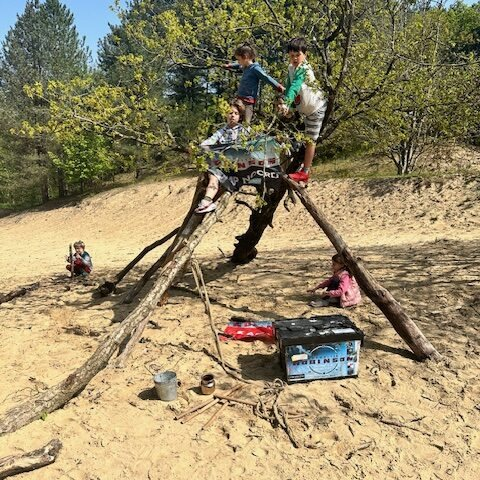
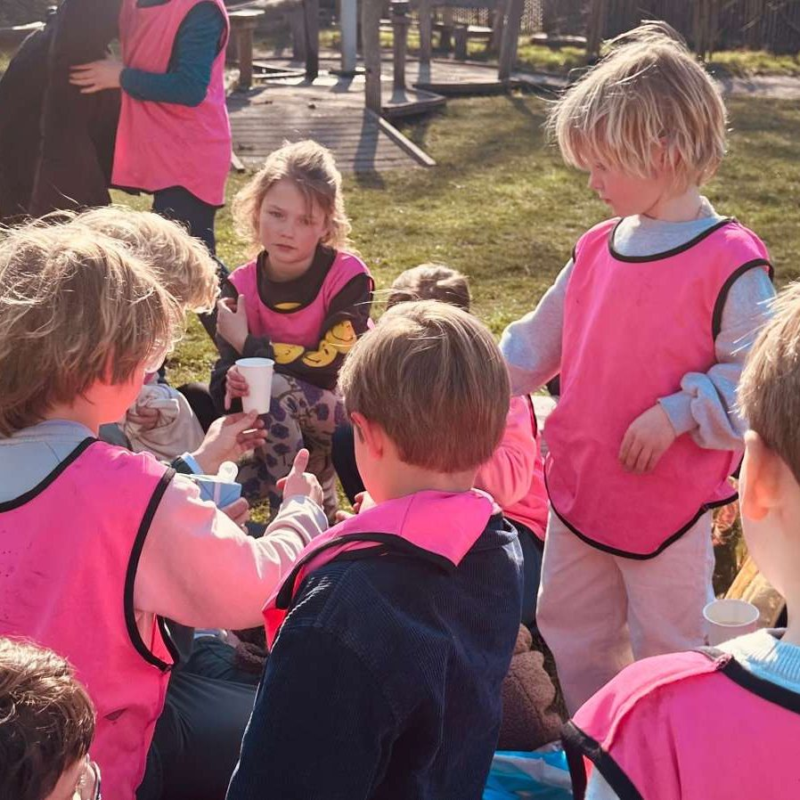
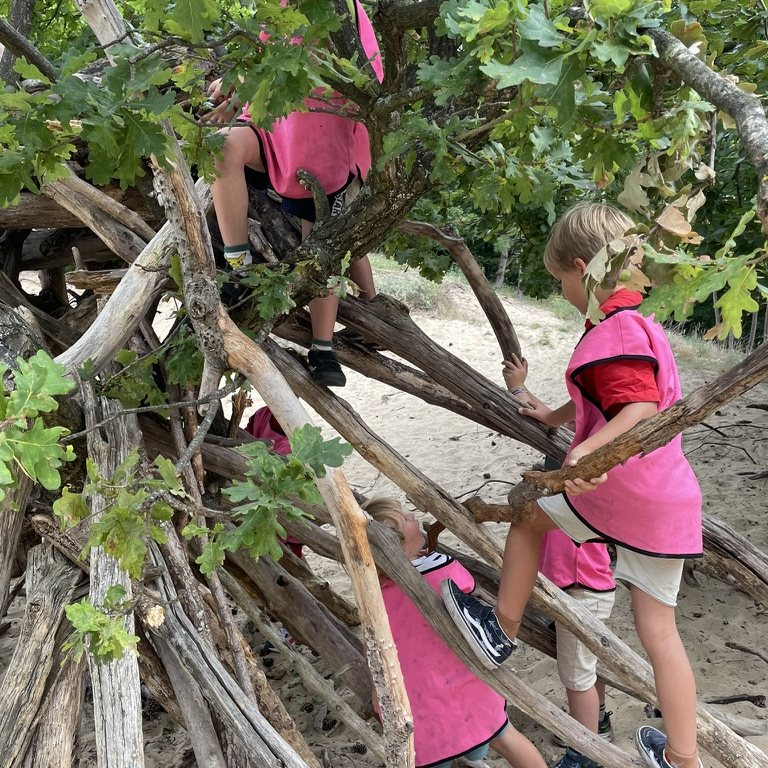
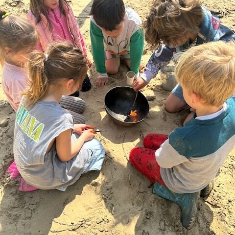
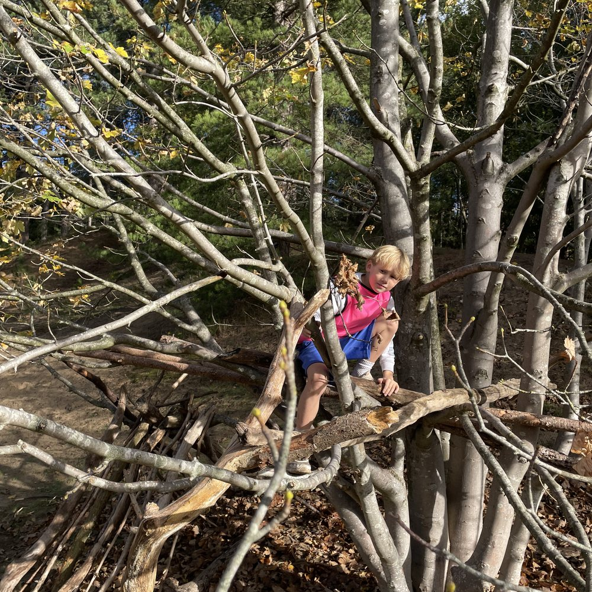

Back to
real life
De energie van de jaren '90 — maar dan in 2026. Buiten spelen in de duinen tot je niet meer naar huis wilt, hutten bouwen en nieuwe vriendjes maken. Al meer dan 500 kinderen gingen je voor.
vakantie
open
 Rond het vuur
Rond het vuur Op avontuur in de duinen
Op avontuur in de duinenKies jullie avontuur

Dagkampen
Een hele dag hutten bouwen, klimmen en rennen in de duinen. Jij brengt je kind, wij zorgen voor het avontuur. Eten, drinken en materiaal zijn inbegrepen.
Bekijk de dagkampen →
Afterschool
Geen opvang, maar een buurtclub waar je kind erbij hoort. Sport, creativiteit en plezier met een vaste groep, tot 18:15.
Ontdek de club →
SUP huren
Samen het water op. Telefoon weg, zon aan, en Haarlem van een kant die je nog niet kende. Dagelijks open van 08:00 tot 22:00.
Huur een SUP →Rennen.
Bouwen.
Lachen.
Thuiskomen met zand in je schoenen en verhalen voor aan tafel. Gewoon lekker actief bezig zijn en helemaal opgaan in het moment — zoals vroeger.


Meer dan een middag of dag
Geen stilzitten, geen schermen — wel buiten zijn, durven, samen iets maken en nieuwe vriendjes.

Samen
Durven Avontuur
AvontuurZo ziet een TRIBE-dag eruit
Elke dag is een verrassing en past zich aan op weer en leeftijdsgroep — maar dit ritme herken je altijd.
Vakanties i.p.v. reguliere opvang? Dat kan.
Reserveer je vakantiedagen bij ons in plaats van de gebruikelijke opvang. Je betaalt alleen voor de dagen dat je komt — en je kind beleeft elke vakantie iets nieuws.